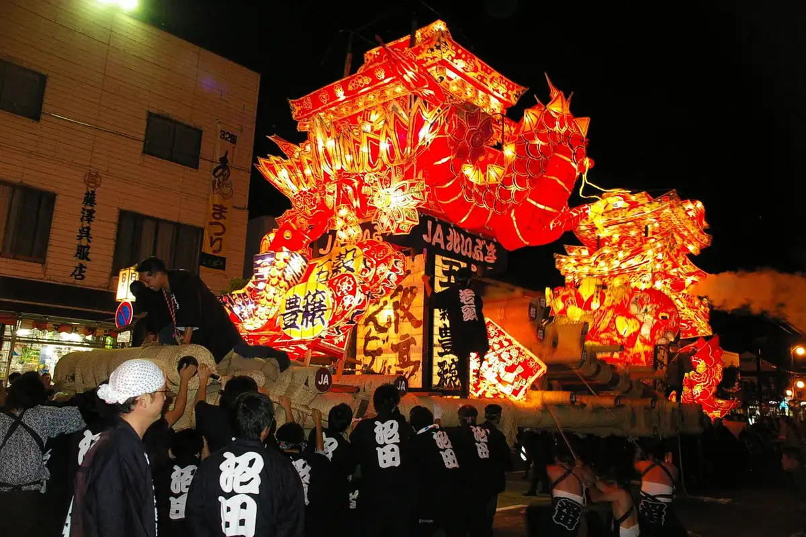
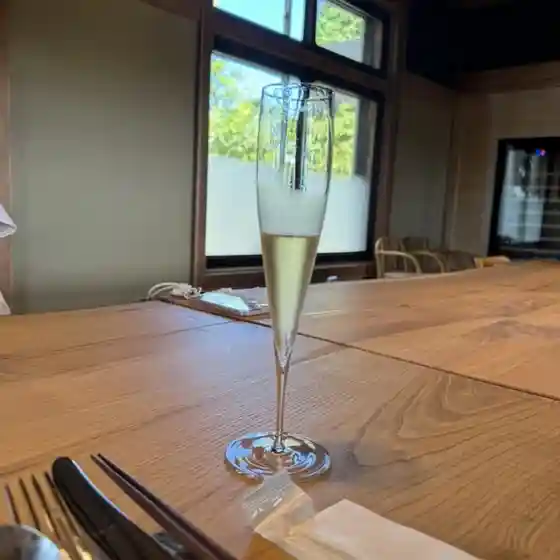
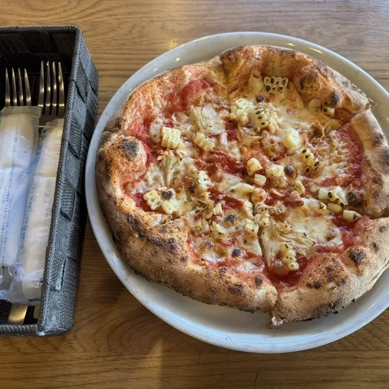
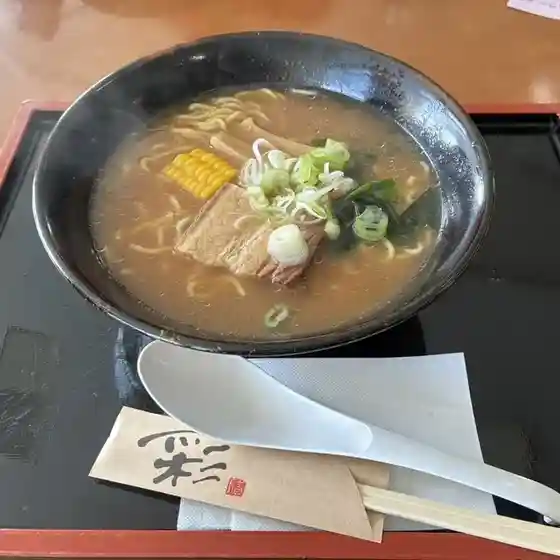
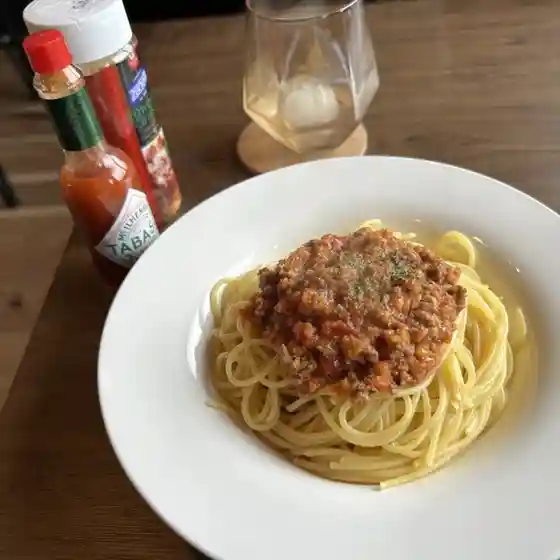
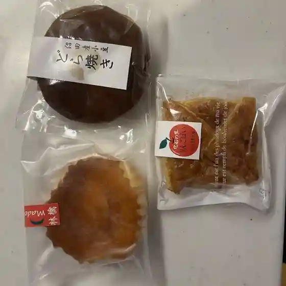
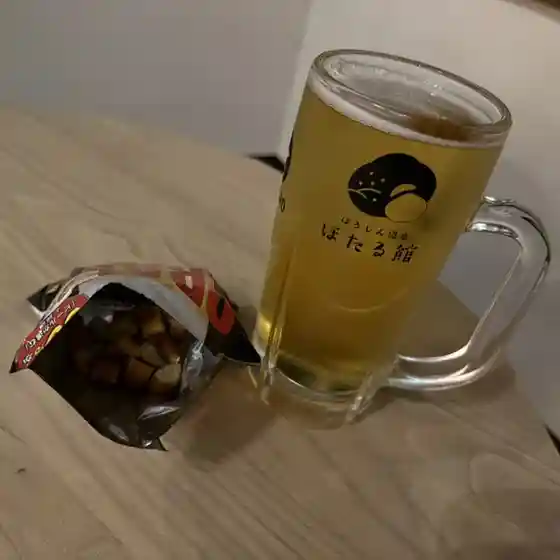
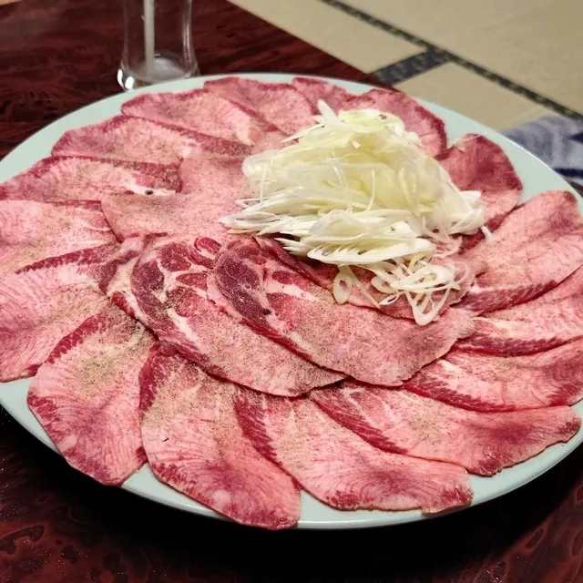

Numatacho
Numatacho · Hokkaido
Numatacho
Highlighted on the Hokkaido map.

Stay
ほろしん温泉ほたる館
Horoshin Onsen Hotaru Kan
Dining
Maison Tsugawa Hokkaido

Maison Tsugawa Hokkaido
Piccolo Barba

Piccolo Barba
グリーンスコーレカントリー倶楽部

Guriinsukoorekantorii Kurabu
Chapter

Chapter
燦

San
かわしま

Kawashima
ほろしん温泉 ほたる館

Horoshin Onsen Hotaru Kan
沼田大門

Numata Daimon
うえつぐ食堂
Uetsugu Shokudou
レストラン せせらぎ
Resutoran Seseragi
セイコーマート 沼田
Seikoomaato Numata
あきや食堂
Akiya Shokudou
上林
Kanbayashi
味処 やま田
Ajidokoro Yama Ta
駅そば
Eki Soba
酔心
Sui Kokoro
青春酒場キタモリ
Seishun Sakaba Kitamori